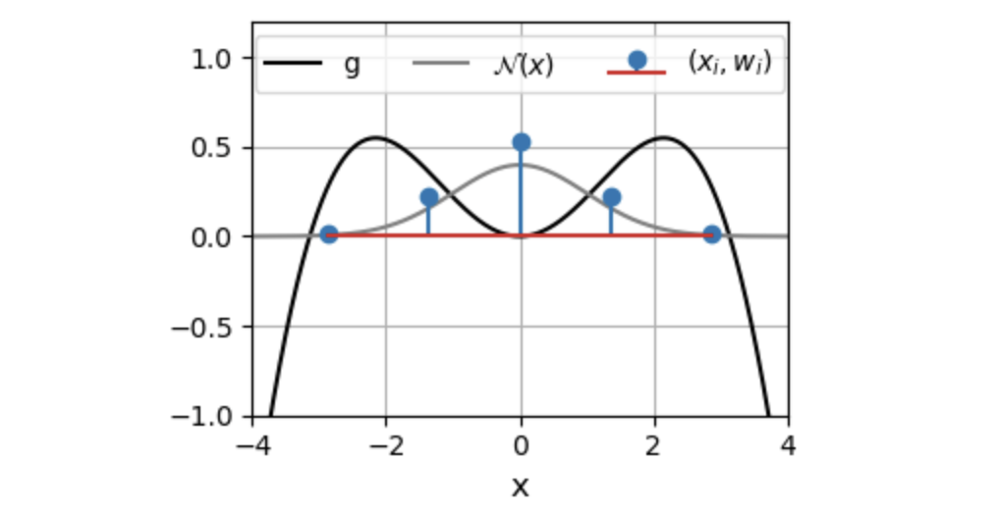
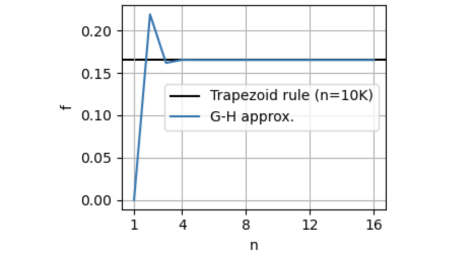

Gauss-Hermite quadrature: an elegant approximation
Rich Pang
2026-01-22
Suppose we would like to approximate an intractable integral of the form
\[f = \text{E}_{\mathcal{N}(x)}[g(x)] = \int_{-\infty}^{\infty} \mathcal{N}(x) g(x) dx\] where \(\mathcal{N}(x)\) is the standard normal distribution. Suppose also that \(g\) is rather expensive to compute and we would like to approximate this integral using only \(n\) function evaluations \(g(x_1), \dots, g(x_n)\). How do we choose the \(\{x_i\}\) at which to evaluate \(g\)?
Enter Gauss-Hermite quadrature, which states that we should choose \[f \approx \sum_{i=1}^n w_i g(x_i)\] where \(x_i\) are the roots of the physicist's Hermite polynomial \(H_n(x)\) and the weights are given by \[w_j = \frac{2^{n-1}n!\sqrt{\pi}}{n^2 H_{n-1}(x_i)^2}.\]
Example
Here we evaluate the integral for \(g(x) = cos(x/2)(x/2)^2\). The plot below shows the roots of \(H_n\) for \(n=5\), and their associated weights.

As we can see, the G-H approximation is quite accurate even for low \(n\).

Comparison to other approaches
If we were to use the trapezoid rule, we would have had to truncate the integration bounds, for instance from \(-L\) to \(L\), leaving us with another decision to make about how to choose \(L\). G-H is thus simpler, since we only have to choose \(n\), which controls the accuracy of the approximation.
Alternatively, we could have employed a Monte Carlo approach by sampling \(n\) values \(x_1 \dots x_n\) from \(N(x)\), then approximating \(f \approx \sum_i g(x_i)\). MC approaches, however, have the drawback of being nondeterministic — certain samples of \(\{x_i\}\) might yield better approximations than others. G-H, on the other hand, is purely deterministic.
Python Code
The Python code for implementing G-H quadrature is quite simple, since we can use numpy's hermgauss function:
import numpy as np
from numpy.polynomial.hermite import hermgauss
n = 16 # number of points
x_i, w_i = hermgauss(n)
def g(x):
return np.cos(x/2)*(x/2)**2
# evaluate (note the additional square-root factors needed)
f = (1. / np.sqrt(np.pi)) * np.sum(w_i * g(np.sqrt(2.0) * x_i))
Remark
G-H quadrature is not necessarily optimal, and its accuracy will depend on \(g\). For instance, if \(g\) is a sum of \(n\) delta functions, the optimal function evaluations should take place at the locations of the delta functions. In practice, however, it can be quite accurate for well-behaved \(g\) and notably its accuracy is determined only by a single parameter \(n\), the number of function evaluations.